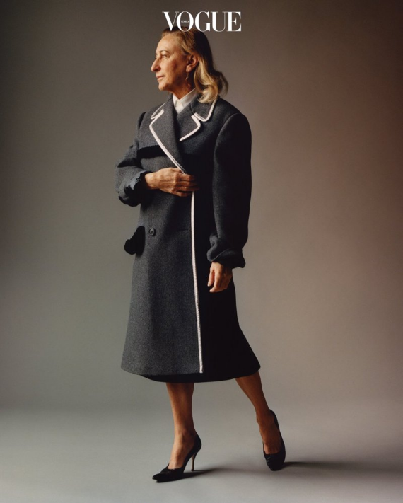

전통적 아름다움과 전복적 기괴함, 필수 불가결한 상업성과 지독한 자기 고집, 여성이 누려야 할 당연한 권력과 능동적 연약함. 모순과 역설을 통해 패션이라는 대지의 풍광을 바꾸는 패션 여제

Q. 일상의 경험이 디자인에 영향을 끼치나?
A. 매일의 이미지는 머릿속에 차곡차곡 쌓인다. 깨닫지 못한 채 그런 아이디어가 어느새 작업에 영향을 끼치는 것이다. 인식하지 못한 채 무엇에 끌리고, 그것에 대해서 끊임없이 고민하고, 의문을 더하는 긴 과정을 거친다. 정작 나는 완성하고 나서야 그 시작을 깨닫게 된다. 예를 들어 멍청한 아이디어에 내가 끌렸다면, 분명 그건 어떤 기억 때문일 확률이 크다.
흔히 말하는 패션 피플뿐만 아니라, 프라다 옷을 입는 여성들은 특별하다. 현실에서 환상을 즐길 수 있는 패션이라 여겨진다. 현실과 환상 속에서 균형을 잡는 비결이 있나?
더 오랫동안 일할수록, 내 작업이 좀더 현실의 여성을 향해가는 듯하다. 현실의 환상이라고 해도 좋다. 물론 환상은 중요하다. 하지만 동시에 사람들에게 납득이 갈 만한 작업을 하고 싶다. 어떤 순간엔 환상에 빠져들 때가 있고, 때로 현실에 집착할 때도 있다. 즉 환상과 현실은 머릿속에서 순환하듯이 움직인다. 내 상상력은 사람들을 위해 존재한다.
Q. 정답을 찾기 어려울 때도 많나?
A. 그래서 질문을 많이 하지 않으려 한다. 하지만 고민을 멈출 수는 없다. 내가 좋아하는 걸 기본으로 한 컬렉션은 좀더 쉽다. 하지만 언제나 내가 좋아하는 걸 할 순 없다. 그건 너무 쉽지 않나. 난 내가 싫어하는 걸 향해 나아가는 편이다.
Q. 새로운 것을 찾는 것도 자유롭기에 가능한 일 아닌가?
A. 언제나 자유로웠다. 내겐 뭐든 할 자유가 주어졌다. 무엇이 잘못되더라도, 그건 내 잘못이다.
Q. 그 자유가 일에 도움이 된다고 생각하나?
A. 자유는 물론 내게 강점이다. 하지만 자유롭다고 해서 좀더 창의적인 건 아니다. 몇 년 전 젊은 사진가 중 한번 일해보고 싶은 친구가 있었다. 그가 하던 작업이 신선하고 흥미롭게 느껴졌기에 그를 선택했다. 하지만 막상 함께 일하기로 했을 때, 그는 매우 괴로워했다. 그에게 무엇이든 할 수 있는 자유를 주자 대체 뭘 어떻게 해야 할지 몰라 당황했다. 옷을 입히지 않아도 되고, 가방을 들지 않아도 되니 새로운 것만 보여달라고 부탁했다. 그런데 오히려 그 자유가 그를 마비시킨 셈이었다. 그러니 너무 많은 자유가 꼭 이점이 되지는 못한다. 그건 패션에만 해당되는 이야기는 아니다. 다른 분야에서도 한계가 있거나 아주 조금 자유가 주어질 때 좀더 창의적인 결과가 나온다. 어려움이야말로 창의력을 더한다. 달리 말하자면, 난 자유롭고, 뭐든 할 수 있다. 그렇기에 더 어렵다.
그 자유 속에서 진짜 하고 싶은 이야기를 찾는 것도 쉽지 않은 일이다.
사람들의 삶에 관심이 많다. 영화처럼 그들의 삶을 상상하고, 그걸 기본으로 일종의 이론을 만들어간다.
미우치아 프라다는 인터뷰 내내 자주 웃음을 터뜨리고, 종종 자신의 답이 우습지 않느냐는 듯한 표정을 지어 보이곤 했다. 결코 스스로를 진지하게 받아들이지 않는 태도. 하지만 정확히 자신의 뜻을 전달하기 위해 부연 설명을 덧붙이기도 하고, 질문의 뜻을 다시 묻기도 하면서 천천히 생각에 잠겼다. 대답을 통해 질문을 유도하는 노련함도 느껴졌다. 정치적이거나 여성에 대한 이야기가 나올 때면 답변 속도가 한 박자 더 느려졌다. 민감한 문제에 관해서는 인상을 찌푸리면서도 자기 의견을 성실하게 전달했다. 예를 들어 정치적 공정함과 예술의 관계에 대해서는 데미언 허스트와 일화를 들어 한참을 설명했다.(아쉽게도 이 부분은 기사 마감 직전 특정 인물과 예민한 주제 때문인지 프라다 하우스에서 모두 싣지 말아달라고 정중히 부탁했다) 금세 1시간이 흘렀지만, 아직 남은 질문은 적지 않았다. 어떤 책을 읽고 있는지, 어떤 영화가 좋았는지, 최근 인상적이었던 아티스트가 누구인지도 궁금했고, 집에서는 어떻게 시간을 보내는지, 스위스의 별장에서는 어떻게 휴가를 보내는지도 알고 싶었다. 그렇지만 그녀를 계속 붙잡아둘 수는 없었다. 지난 컬렉션에 대한 이야기를 덧붙이며 마지막 질문을 던졌다.
Q. 패션을 통해 여성들에게 힘을 실어줄 수 있다고 생각하나?
A. 그렇게 생각하지 않는다. 여성은 스스로 혹은 지식, 아이디어를 통해 힘을 느낄 것이다. 훌륭한 파워 비즈니스 수트를 입는다고 힘이 생기진 않는다. 만약 스스로 당당하다면, 반쯤 벗고 다녀도 괜찮다. 여성의 힘은 패션에 따라 움직이지 않는다. 옷은 성격과 취향, 아이디어를 보여줄 수는 있다. 하지만 진정한 ‘파워’는 그 사람의 내부에서 드러난다.
Q. 여성 디자이너로서 이런 주제에 대해 이야기하는 것이 어렵지 않나?
A. 난 매우 정치적인 사람이다. 하지만 정치에 대해 이야기하려 하지 않는다. 돈 많은 패션 디자이너가 정치에 대해 이야기하는 건 문제가 된다. 물론 난 정치에 깊은 관심을 지니고 있고, 의견도 있다.